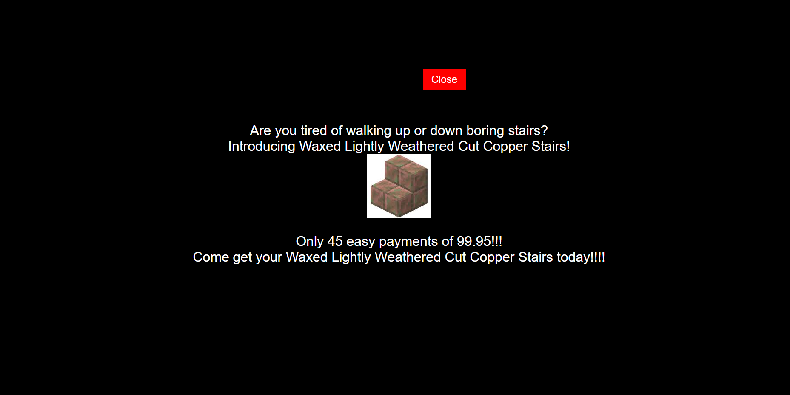
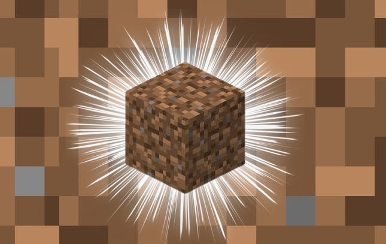
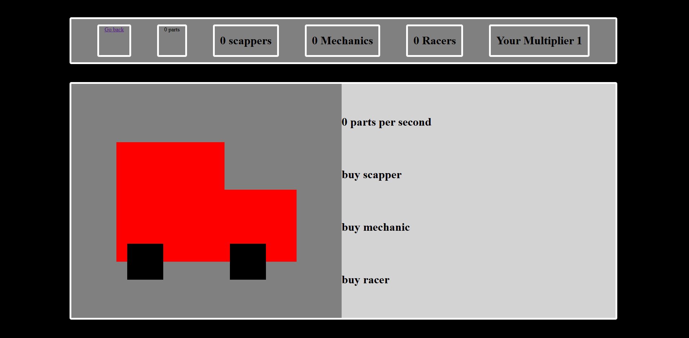

Introducing Waxed Lightly Weathered Cut Copper Stairs if you love random clicker games with no point and no purpose come and play Waxed Lightly Weathered Cut Copper Stairs ITS tons of fun!!! you can click a Waxed Lightly Weathered Cut Copper Stair for Waxed Lightly Weathered Cut Copper Stair Shards which you can use to buy workers to harvest your Waxed Lightly Weathered Cut Copper Stairs come on to my website and play Waxed Lightly Weathered Cut Copper Stairs!!!
Dirt clicker is a brand new clicker game, revolving around the greatest block in minecraft; the dirt block! In Dirt clicker, you can buy upgrades like fortune level and more shovels to get you more dirt per click! You can also buy workers and factories to idly gain dirt per second.
In Car Clicker, players engage in a fast-paced, click-based game where the goal is to earn points by clicking on the car to increase the amount of parts in your inventory. Unlock more scappers, mechanics, and racers to increat part production. Stay long enough and encounter a car meet. Come play Car Clicker!
